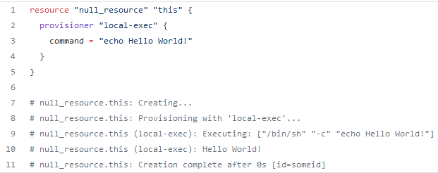

Terraform provisioners have nothing in common with providers. You can use provisioners to run different commands or scripts on your local machine or a remote machine, and also copy files from your local machine to a remote one. Provisioners, exist inside of a resource, so in order to use one, you will simply have to add a provisioner block in that particular resource.
One thing worth mentioning is the fact that a provisioner is not able to reference the parent resource by its name, but they can use the self object which actually represents that resource.
They are considered a last resort, as they are not a part of the Terraform declarative model
There are 3 types of provisioners:
- local-exec
- file (should be used in conjunction with a connection block)
- remote-exec (should be used in conjunction with a connection block)
All provisioners support two interesting options when and on_failure.You can run provisioners either when the resource is created (which is, of course, the default option) or if your use case asks for it, run it when a resource is destroyed.
From experience, I can tell you that sometimes provisioners fail for no reason, or they can even appear to be working and not doing what they are expected to. Still, I believe it is still very important to know how to use them, because, in some of your use cases, you may not have any alternatives.
A null resource is basically something that doesn’t create anything on its own, but you can use it to define provisioners blocks. They also have a “trigger” attribute, which can be used to recreate the resource, hence to rerun the provisioner block if the trigger is hit.
Local-Exec
As its name suggests, a local-exec block is going to run a script on your local machine. Nothing too fancy about it. Apart from the when and on_failure options, there are a couple of other options you can specify:
- command — what to run; this is the only required argument.
- working_dir — where to run it
- interpreter — what interpreter to use (e.g /bin/bash), by default terraform will decide based on your system os
- environment — key/value pairs that represent the environment
Let’s see this in action in a null resource and observe the output of a terraform apply

Connection Block
In order to run or copy something on a remote vm, you will first have to connect to it, right?
Connection blocks, support both ssh and winrm, so you can easily connect to both your Linux and Windows vms.

File
The file provisioner is used to copy a file from your local vm to a remote vm. There are three arguments that are supported:
- source (what file to copy)
- content (the direct content to copy on the destination)
- destination (where to put the file)
As mentioned before, file needs a connection block to make sure it works properly. Let’s see an example on an ec2 instance.


Remote-Exec
Remote-Exec is used to run a command or a script on a remote-vm.
It supports the following arguments:
- inline → list of commands that should run on the vm
- script → a script that runs on the vm
- scripts → multiple scripts to run on the vm
You have to provide only one of the above arguments as they are not going to work together.
Similar to file, you will need to add a connection block.